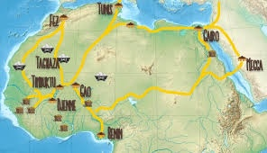

Arabic was the main language used in Trans Saharan Trade. Trans Saharan slave trade was refered to as Arab slave trade.
Ghana
Ghana was an empire that made a network of caravan routes, which played a large role in trade.
Mali
Mali was an empire that became wealthy from trade and gained ideas, technology, and religion from traders. Islam spread and expanded politically from it's trade.
Songhai
Songhai connected North, West, and East Africa with the Middle East. it controlled trading posts, Jenne, and Timbuktu.
The Bantu traded rice, oil, grains, dried fish. They spread iron technology and agricultural techniques.
Great Zimbabwe exported gold and ivoryto the east. They imported cotton, stoneware, and glass.
Kilwa was a port that exported gold, ivory, timber, and animal skins. It was the center of the Swahili Civilization.
Swahili was where Trans Saharan Trade connected to the Indian Ocean Trade routes .
Salt and Gold
Salt was mined and brought to trading cities, and traded for gold. This was the earliest exchange.
Camels

Camels were used extensively in caravans. Caravanns usually consisted of 1-5,000 camels 1/3 of which carried food and water. Camaels could last 15 days without water.
The Indian Ocean connected African empires with Asia.
Trans Saharan Trade caused the spread of Islam, cultural exchange, economic prosperity, political expansion, and civilizational development. It peaked in 1325 A.D.